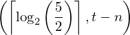
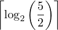
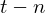
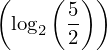
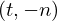
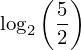
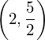
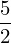
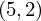

Expression of type LessEq¶
from the theory of proveit.physics.quantum.QPE¶
In [1]:
import proveit
# Automation is not needed when building an expression:
proveit.defaults.automation = False # This will speed things up.
proveit.defaults.inline_pngs = False # Makes files smaller.
%load_expr # Load the stored expression as 'stored_expr'
# import Expression classes needed to build the expression
from proveit.numbers import Ceil, LessEq, Log, five, frac, subtract, two
from proveit.physics.quantum.QPE import _n, _t
In [2]:
# build up the expression from sub-expressions
expr = LessEq(Ceil(Log(two, frac(five, two))), subtract(_t, _n))
In [3]:
# check that the built expression is the same as the stored expression
assert expr == stored_expr
assert expr._style_id == stored_expr._style_id
print("Passed sanity check: expr matches stored_expr")
In [4]:
# Show the LaTeX representation of the expression for convenience if you need it.
print(stored_expr.latex())
In [5]:
stored_expr.style_options()
In [6]:
# display the expression information
stored_expr.expr_info()
| core type | sub-expressions | expression | |
|---|---|---|---|
| 0 | Operation | operator: 1 operands: 2 | |
| 1 | Literal |  | |
| 2 | ExprTuple | 3, 4 |  |
| 3 | Operation | operator: 5 operand: 9 |  |
| 4 | Operation | operator: 7 operands: 8 |  |
| 5 | Literal |  | |
| 6 | ExprTuple | 9 |  |
| 7 | Literal |  | |
| 8 | ExprTuple | 10, 11 |  |
| 9 | Operation | operator: 12 operands: 13 |  |
| 10 | Literal |  | |
| 11 | Operation | operator: 14 operand: 17 |  |
| 12 | Literal |  | |
| 13 | ExprTuple | 21, 16 |  |
| 14 | Literal |  | |
| 15 | ExprTuple | 17 |  |
| 16 | Operation | operator: 18 operands: 19 |  |
| 17 | Literal |  | |
| 18 | Literal |  | |
| 19 | ExprTuple | 20, 21 |  |
| 20 | Literal |  | |
| 21 | Literal |  |